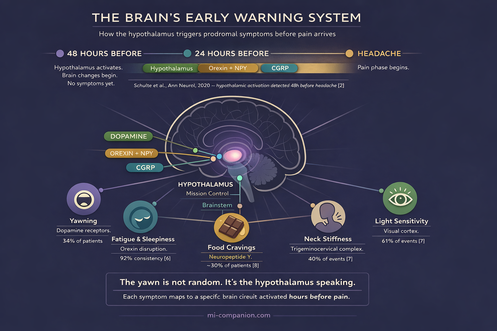
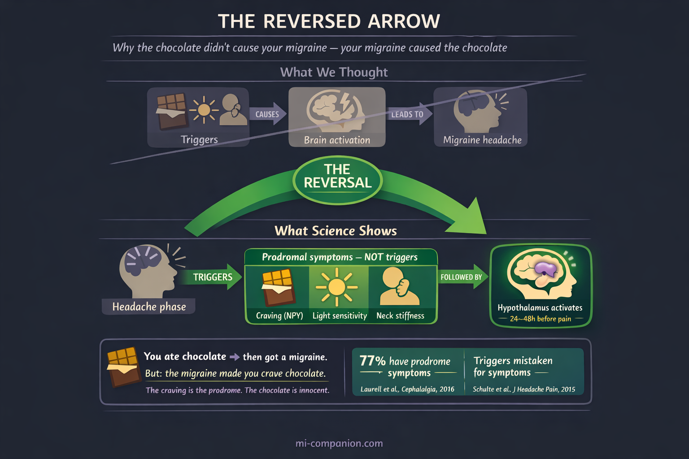

By Rustam Iuldashov
30 years lived experience with chronic migraine | Sources: 24 peer-reviewed references including The Lancet (n=477), Cephalalgia (n=2,714), Nature Medicine (n=477), and Frontiers in Neurology | Last updated: March 11, 2026
Medical Review: This content is based on peer-reviewed research from The Lancet, Nature Medicine, Cephalalgia, The Journal of Headache and Pain, Annals of Neurology, Brain, Neurology, Neurology Clinical Practice, Neurological Sciences, and Scientific Reports.
Important Notice: This article is for informational purposes only and does not replace professional medical advice. The author is not a licensed physician or healthcare professional. Always consult your doctor before making changes to your treatment plan.
Key Takeaways
- The prodrome affects up to 77% of people with migraine and begins 2–48 hours before headache[1][3]
- Your prodromal symptoms are remarkably consistent — fatigue appeared in 92% of events for those who reported it[6]
- The hypothalamus drives the prodrome through dopamine, orexin, and neuropeptide Y, explaining yawning, cravings, mood changes, and fatigue[1][12][16]
- Many “triggers” — chocolate cravings, light sensitivity — may actually be prodromal symptoms, not causes[18][19]
- Treating during the prodrome with a CGRP antagonist prevented moderate/severe headache in 46% of events versus 29% with placebo[20]
- Learning your prodrome transforms a dreaded countdown into an actionable early warning system
You reach for the chocolate. You yawn — wide, involuntary, three times in twenty minutes. Your neck feels wrapped in concrete. Nothing hurts yet.
But something has already begun.
Deep inside your skull, the hypothalamus has gone quiet in the wrong places and loud in the wrong others. Dopamine is shifting. Circuits are firing. The migraine attack isn’t coming. It’s here — you just can’t feel the pain yet.
For most of my 30 years with migraine, I missed these whispers. I noticed the headache. I rarely noticed what came before. And yet, what comes before may matter most. Because the prodrome is not just a warning. It is a window — and for the first time in history, science is showing us how to use it.
Your Brain Launches the Attack Hours Before Pain Arrives
A migraine unfolds in phases: prodrome, aura (for some), headache, postdrome. The prodrome — also called the premonitory phase — opens the sequence. It can begin 2 to 48 hours before the headache lands.[1][2]
Most people with migraine experience it. A cross-sectional study of 2,714 people found that 77% of those with migraine reported premonitory symptoms — an average of three different symptoms each.[3] Women experienced them more than men: 81% versus 64%.[3] A systematic review and meta-analysis by Eigenbrodt and colleagues estimated the prevalence at roughly 29% in population studies and 66% in clinic settings.[4] The gap reflects method, not biology: a 2024 REFORM study showed that simply asking people about specific symptoms (prompted enquiry) jumped reporting from 43% to nearly 70%.[5]
77% of people with migraine report premonitory symptoms, with an average of 3 different symptoms each[3]
29% vs 66% — prevalence in population vs clinic studies, reflecting how symptoms are assessed[4]
43% → 70% — reporting jumps when patients are specifically asked about individual symptoms[5]
The pattern is striking. Most people with migraine have a prodrome. Most don’t recognize it as one.
Your Symptom Fingerprint
Here is what surprised researchers — and what surprised me: the prodrome is not random. Your symptoms repeat with remarkable consistency, attack after attack, like a signature.
The PRODROME trial tracked over 1,000 participants across 60 days. People who reported fatigue during at least one prodromal event experienced it during 92% of all subsequent events. Those who reported light sensitivity: 87%.[6]
The five most common prodromal symptoms in the trial: light sensitivity (61% of events), fatigue (51%), neck pain or stiffness (40%), sound sensitivity (36%), and dizziness (31%).[7] In the Laurell study, yawning — often considered the hallmark prodrome signal — topped the list at 34%.[3] A tertiary care study of 893 patients by Kelman found fatigue at 46.5%, sound sensitivity at 36.4%, and yawning at 35.8%, with co-occurring depression and irritability especially pronounced.[8]
Other well-documented symptoms include food cravings, difficulty concentrating, increased urination, mood swings ranging from irritability to unexplained euphoria, and gastrointestinal changes.[1][8]
Your prodrome is a fingerprint. Unique to you. Stable once you learn to read it.

The Neuroscience: Why You Yawn Before You Hurt
Why does your brain make you yawn, crave chocolate, or snap at your partner hours before the pain? The answer sits in the hypothalamus — a small structure that governs sleep, hunger, mood, and temperature. Think of it as mission control for everything your body does automatically.
Functional neuroimaging has cracked this open. In a landmark study, Schulte and colleagues scanned one patient’s brain every day for 30 consecutive days, capturing three spontaneous attacks.[9] Hypothalamic activity spiked 24–48 hours before headache onset. Connectivity between the hypothalamus and brainstem pain circuits shifted well before any pain appeared.[9][10]
PET imaging during nitroglycerin-triggered prodromal symptoms confirmed the picture: the hypothalamus, periaqueductal gray, dorsal pons, and multiple cortical areas all lit up during the prodrome.[1][11] Arterial spin labeling revealed increased blood flow in the amygdala, hippocampus, and anterior cingulate cortex — regions that process emotion, memory, and sensory input.[1]
Each prodromal symptom maps to a specific circuit. Here’s the translation:
Yawning and sleepiness trace to dopamine. The hypothalamus releases it during the prodrome, and at low concentrations it hits hypersensitive presynaptic dopamine receptors — the result is involuntary yawning and drowsiness.[12][13][14] The sensitivity is measurable: when given the dopamine agonist apomorphine, people with migraine yawn significantly more than people without.[13][15]
Food cravings involve neuropeptide Y (NPY) and orexin — hypothalamic neurotransmitters that regulate appetite and wakefulness. Their interaction during the prodrome drives both intense cravings and the heavy fatigue that often accompanies them.[1][16]
Neck stiffness reflects early activation of the trigeminocervical complex — the brainstem junction where cervical nerves and the trigeminal system converge. This is not a trigger. It is the attack already in motion.[17]
Mood changes connect to the limbic system — amygdala, hippocampus, prefrontal cortex — all of which ramp up during the premonitory phase.[1][11]
Your brain isn’t malfunctioning randomly. It’s running a specific sequence. And that sequence is legible.
The Confusion That Costs You Time
Here is perhaps the most important insight in modern migraine science — and the most underappreciated: many things you blame as triggers may actually be prodromal symptoms.
You eat chocolate. Hours later, the headache arrives. The chocolate looks guilty. But consider this: your hypothalamus activated a craving circuit as part of the prodrome, driving you to eat chocolate before the headache you were already going to get. The chocolate didn’t cause the migraine. The migraine caused the chocolate.
Schulte and colleagues addressed this directly in 2015, arguing that light sensitivity, smell sensitivity, and sound sensitivity in the premonitory phase are frequently mistaken for triggers.[18] A 2024 review by Sebastianelli and colleagues framed the problem as the “threshold hypothesis” — this shift in understanding is central to how we approach identifying triggers versus symptoms.

This distinction is not academic. If you avoid chocolate because you think it triggers migraine, you may be eliminating a harmless food and missing the real signal. But if you recognize the craving as a whisper from your hypothalamus — you gain hours to act.
The Therapeutic Window: Acting Before Pain
Recognition alone changes nothing. What you do with that recognition changes everything.
The PRODROME trial, published in The Lancet in 2023, was the first phase 3 randomized controlled trial to test treatment during the prodrome.[20] Researchers enrolled 518 adults who could reliably identify their prodromal symptoms. Participants took ubrogepant — a CGRP receptor antagonist — or placebo during the prodrome, before any headache appeared.
46% vs 29% — absence of moderate/severe headache within 24 hours: ubrogepant vs placebo[20]
As early as 1 hour — prodromal symptoms (fatigue, neck pain, light/sound sensitivity) improved after treatment[7]
OR = 1.66 — ability to function normally over 24 hours significantly improved[21]
The results: 46% of ubrogepant-treated events were followed by no moderate or severe headache within 24 hours, compared to 29% with placebo.[20] Function improved. Activity limitations dropped.[21] A follow-up analysis published in Nature Medicine in 2025 showed that prodromal symptoms themselves — fatigue, neck pain, sensitivity to light and sound — improved as early as one hour after treatment.[7]
⚠️ When to Seek Emergency Help
A sudden, severe headache — especially one that arrives like a thunderclap, is the worst of your life, or comes with fever, stiff neck, confusion, seizures, weakness, or vision loss — is NOT a normal migraine prodrome. Call your local emergency number immediately.
Do not use this article to self-diagnose.
This trial marks a shift in how we think about migraine treatment. It doesn’t have to start when the pain starts. It can start when the whisper starts.
Even without prescription medication, recognizing your prodrome opens a window. Hydrate. Reduce stimulation. Adjust caffeine. Dim lights. Take over-the-counter medication early, before the pain escalates. Track your symptoms — consistency is your ally. Learning your prodrome transforms a dreaded countdown into an actionable early warning system.
⚕️ Important Medical Disclaimer
This article is for informational and educational purposes only and does not constitute medical advice, diagnosis, or treatment. The author, Rustam Iuldashov, is not a licensed physician, neurologist, or healthcare professional. He is a patient advocate with 30 years of personal experience living with chronic migraine.
All clinical claims in this article are sourced from peer-reviewed research published in indexed medical journals. Study designs and sample sizes are noted where applicable.
Always consult a qualified healthcare provider for questions about your individual health, migraine treatment, or medication decisions. Do not start, stop, or change any medication — including ubrogepant or other CGRP-targeting therapies — without consulting your doctor.
References
- Gao L, Zhao F, Tu Y, Liu K. “The prodrome of migraine: mechanistic insights and emerging therapeutic strategies.” Frontiers in Neurology, 15:1496401 (2024). doi:10.3389/fneur.2024.1496401. Study design: Narrative review.
- Schulte LH, Mehnert J, May A. “Longitudinal neuroimaging over 30 days: temporal characteristics of migraine.” Annals of Neurology, 87:646–651 (2020). doi:10.1002/ana.25697. Study design: Prospective longitudinal fMRI. n=9.
- Laurell K, Artto V, Bendtsen L, et al. “Premonitory symptoms in migraine: a cross-sectional study in 2714 persons.” Cephalalgia, 36(10):951–959 (2016). doi:10.1177/0333102415620251. Study design: Cross-sectional. n=2,714.
- Eigenbrodt AK, Christensen RH, Ashina H, et al. “Premonitory symptoms in migraine: a systematic review and meta-analysis of observational studies reporting prevalence or relative frequency.” The Journal of Headache and Pain, 23:140 (2022). doi:10.1186/s10194-022-01510-z. Study design: Systematic review and meta-analysis.
- Thuraiaiyah J, Ashina H, Christensen RH, et al. “Premonitory symptoms in migraine: a REFORM study.” Cephalalgia, 44:03331024231223979 (2024). doi:10.1177/03331024231223979. Study design: Cross-sectional. n=632.
- Schwedt TJ, Pavlovic JM, Engstrom E, et al. “Characterizing Prodrome (Premonitory Phase) in Migraine: Results from the PRODROME Trial Screening Period.” Neurology Clinical Practice, 14(6):e200359 (2024). doi:10.1212/CPJ.0000000000200359. Study design: Prospective (PRODROME trial screening). n=477.
- Goadsby PJ, Dodick DW, Schwedt TJ, et al. “Ubrogepant for the treatment of migraine prodromal symptoms: an exploratory analysis from the randomized phase 3 PRODROME trial.” Nature Medicine (2025). doi:10.1038/s41591-025-03679-7. Study design: Phase 3 RCT (exploratory analysis). n=477.
- Kelman L. “The premonitory symptoms (prodrome): a tertiary care study of 893 migraineurs.” Headache, 44:865–872 (2004). doi:10.1111/j.1526-4610.2004.04167.x. Study design: Cross-sectional (tertiary care). n=893.
- Schulte LH, May A. “The migraine generator revisited: continuous scanning of the migraine cycle over 30 days and three spontaneous attacks.” Brain, 139:1987–1993 (2016). doi:10.1093/brain/aww097. Study design: Prospective longitudinal fMRI. n=1.
- Karsan N, Goadsby PJ. “Neuroimaging in the pre-ictal or premonitory phase of migraine: a narrative review.” The Journal of Headache and Pain, 24:106 (2023). doi:10.1186/s10194-023-01617-x. Study design: Narrative review.
- Maniyar FH, Sprenger T, Monteith T, Schankin C, Goadsby PJ. “Brain activations in the premonitory phase of nitroglycerin-triggered migraine attacks.” Brain, 137:232–241 (2014). doi:10.1093/brain/awt320. Study design: Experimental provocation with PET. n=12.
- Barbanti P, Fofi L, Aurilia C, Egeo G. “Dopaminergic symptoms in migraine.” Neurological Sciences, 34(Suppl 1):S67–S70 (2013). doi:10.1007/s10072-013-1415-8. Study design: Review.
- Peroutka SJ. “Dopamine and migraine.” Neurology, 49(3):650–656 (1997). doi:10.1212/WNL.49.3.650. Study design: Review.
- Barbanti P, Aurilia C, Egeo G, Fofi L, Guadagni F, Ferroni P. “Dopaminergic symptoms in migraine: a cross-sectional study on 1148 consecutive headache center-based patients.” Cephalalgia, 40(11):1168–1176 (2020). doi:10.1177/0333102420929023. Study design: Cross-sectional. n=1,148.
- Blin O, Azulay J, Masson G, Aubrespey G, Serratrice G. “Apomorphine-induced yawning in migraine patients: enhanced responsiveness.” Clinical Neuropharmacology, 14:91–95 (1991). doi:10.1097/00002826-199102000-00008. Study design: Experimental. n=20.
- Christensen RH, Eigenbrodt AK, Ashina H, Steiner TJ, Ashina M. “The premonitory phase of migraine is due to hypothalamic dysfunction: revisiting the evidence.” The Journal of Headache and Pain, 23:152 (2022). doi:10.1186/s10194-022-01518-5. Study design: Critical appraisal/review.
- Ashina S, Bendtsen L, Lyngberg AC, et al. “Prevalence of neck pain in migraine and tension-type headache: a population study.” Cephalalgia, 35:211–219 (2015). doi:10.1177/0333102414535110. Study design: Cross-sectional (population-based). n=653.
- Schulte LH, Jürgens TP, May A. “Photo-, osmo- and phonophobia in the premonitory phase of migraine: mistaking symptoms for triggers?” The Journal of Headache and Pain, 16:14 (2015). doi:10.1186/s10194-015-0495-7. Study design: Prospective diary study. n=27.
- Sebastianelli G, Atalar AÇ, Cetta I, et al. “Insights from triggers and prodromal symptoms on how migraine attacks start: the threshold hypothesis.” Cephalalgia, 44(12):03331024241287224 (2024). doi:10.1177/03331024241287224. Study design: Review.
- Dodick DW, Goadsby PJ, Schwedt TJ, et al. “Ubrogepant for the treatment of migraine attacks during the prodrome: a phase 3, multicentre, randomised, double-blind, placebo-controlled, crossover trial in the USA.” The Lancet, 402:2307–2316 (2023). doi:10.1016/S0140-6736(23)01683-5. Study design: Phase 3 RCT. n=477.
- Schwedt TJ, Dodick DW, Hentz J, et al. “Effect of Ubrogepant on Patient-Reported Outcomes When Administered During the Migraine Prodrome.” Neurology, 103(9):e209745 (2024). doi:10.1212/WNL.0000000000209745. Study design: Phase 3 RCT (secondary analysis). n=477.
- Coppola G, Parisi V, Di Renzo A, et al. “Hypothalamic structural integrity and temporal complexity of cortical information processing at rest in migraine without aura patients between attacks.” Scientific Reports, 11:19843 (2021). doi:10.1038/s41598-021-98213-3. Study design: Cross-sectional MRI. n=40.
- Messina R, et al. “Insights into migraine attacks from neuroimaging.” The Lancet Neurology, 22(8):652 (2023). doi:10.1016/S1474-4422(23)00152-7. Study design: Review.
- D’Onofrio F, Bussone G, Cologno D, et al. “Dopamine involvement in the migraine attack.” Functional Neurology, 15(Suppl 3):171–181 (2000). PMID:11200788. Study design: Review.

How We Create Content
- Peer-reviewed sources only. The Lancet, Nature Medicine, Cephalalgia, The Journal of Headache and Pain, Annals of Neurology, Brain, Neurology, Neurology Clinical Practice, Neurological Sciences, Scientific Reports, Clinical Neuropharmacology, Functional Neurology, The Lancet Neurology.
- Study transparency. Study design and sample sizes noted for all clinical references.
- Source verification. All claims backed by numbered references with DOI links.
- Experience + Science. 30 years personal migraine experience combined with peer-reviewed evidence.
- Regular updates. Articles reviewed when significant new research emerges.
- No conflicts of interest. No funding from pharmaceutical companies manufacturing CGRP-targeted therapies or any medications discussed in this article.
Learn to Read Your Prodrome
Migraine Companion helps you track prodromal symptoms alongside your attacks — so you can discover your personal warning pattern and act before the pain arrives.
Last reviewed: March 2026
Next scheduled review: September 2026